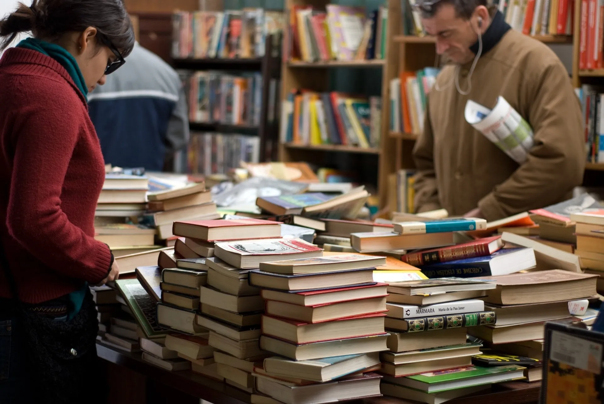

A Feira do Livro de Joinville é um evento literário anual que celebra a cultura escrita, e que se tornou um marco cultural, atraindo amantes da leitura de todas as idades.
Com uma tradição que remonta a anos, a Feira do Livro de Joinville não é apenas um espaço para a venda de livros, oferecendo uma rica variedade de atividades, incluindo palestras de autores renomados, sessões de autógrafos, contação de histórias para crianças, debates literários, apresentações musicais e teatrais.